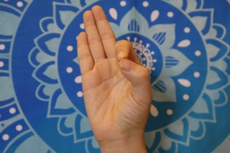

1. 意識手印、迎向希望身印、謙卑身印
心輪能量過度外放，會產生過度驕傲、自大、虛榮感，這些動作可以讓能量收攝，過度鍛鍊胸機會讓能量外放
在手印的科學中，五根手指頭可以對應到下五個脈輪。小指對應海底輪；無名指對應生殖輪；中指對應臍輪；食指對應心輪；大拇指對應喉輪。其中心輪12種心靈情緒傾向中的自我感或我執感的波動，很容易流向食指，我們可以觀察，許多人在演講中或指責別人，自我感高張時，很喜歡用食指來指責別人或表達自我的狀態。所以瑜伽修行建議，要常常彎曲食指來加強控制自我熾盛的狀態。而大拇指對應到喉輪，代表貢高我慢之心，所以彎曲大拇指，可以控制貢高我慢之心，而加強喉輪的16種心靈情緒傾向中臣服謙卑之心。彎曲的食指尖與大拇指尖可以結在一起，同時伸直其他三根手指頭，代表勇往前進，整個手印產生的心靈波動是控制自我感與貢高我慢，讓生命永遠的奮發前進，這就是意識手印Chin Mudra。以靈性修持的角度來說，自我感與貢高我慢心是靈性成長之路最大的妨礙，所以我們可以時常結著意識手印來控制轉化它，也可以教導家裡小孩，想要用食指指東西或別人時，結著意識手印來轉化自我與固執心。
意識手印練習方法：
以蓮花座、完美坐姿或舒適的姿勢坐好。兩手結著意識手印，手心朝上，放在兩膝之上。閉起眼睛，意念集中在第三眼之上，感受著光明智慧充滿著第三眼。配合著自由呼吸。每回練習5到15分鐘。每日早、晚可以各做一回。
功效：
1. 幫助意識的提升與智慧的開展。
2. 改善心靈壓力和失序的狀態。
3. 有增強記憶力和集中力的效果。
4. 能淨化心靈，讓我們在任何情況之下皆能保持頭腦的清晰。
5. 對失眠、容易打瞌睡、憂鬱症和高血壓有益。